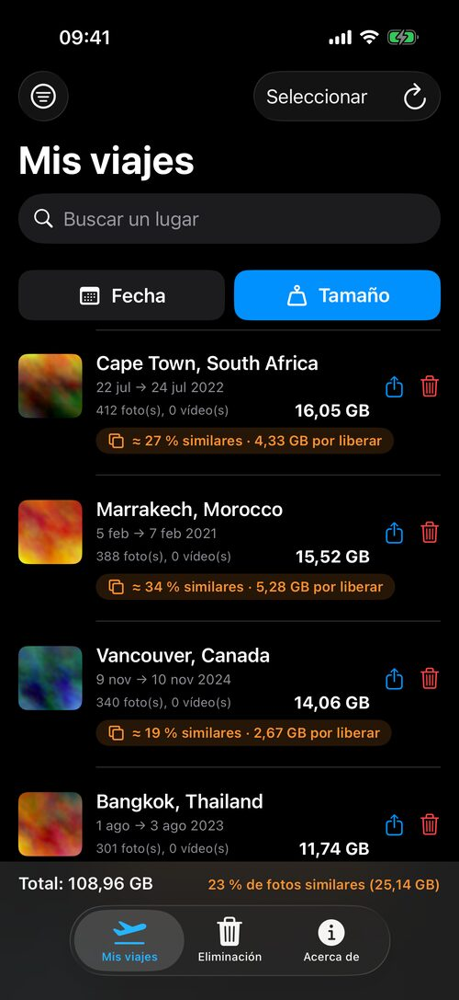
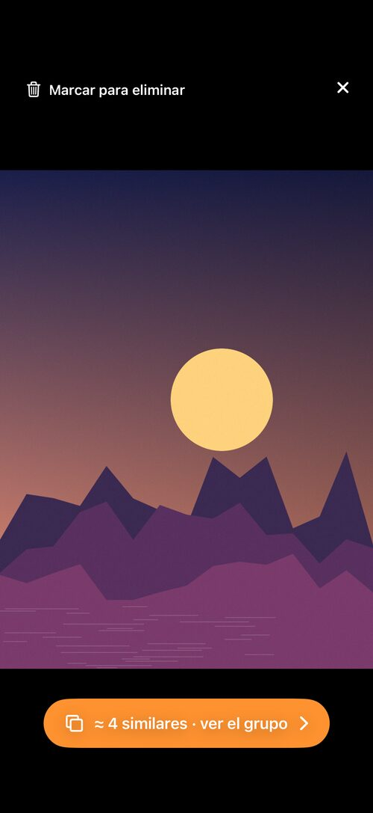
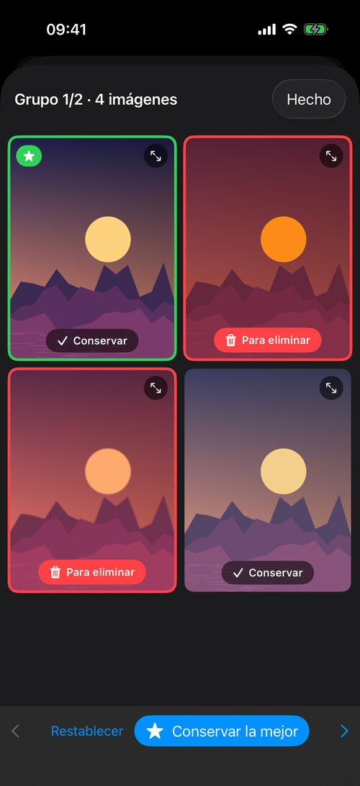
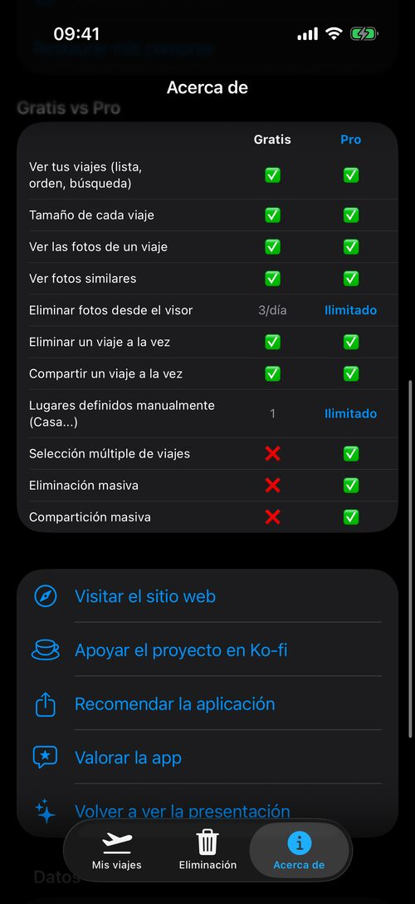

Por fin una forma sencilla de ordenar los viajes antiguos
TripSweep agrupa tus fotos y vídeos por estancia, muestra qué ocupa espacio y qué parte son casi-duplicados, y luego te deja quedarte con la mejor toma y eliminar el resto — sin enviar nunca tus datos a ningún sitio.
→ Descubre también PhotoCull para Mac, la aplicación de escritorio que ordena tus fotos

Un vistazo a la app



Qué hace la app
Agrupación automática por estancia
Tus fotos y vídeos se agrupan por viaje — teniendo en cuenta tanto el tiempo como el lugar, para no mezclar nunca dos destinos distintos. Las estancias se guardan en tu iPhone: la lista aparece al instante al abrir la app y luego se actualiza en segundo plano.
Fotos similares, encontradas para ti
TripSweep analiza tus fotos en segundo plano, en tu iPhone, con el framework Vision de Apple. Cada estancia muestra qué parte son casi-duplicados («≈ 27 % similares · 4,3 GB por liberar») — un buen motivo para volver a ordenar.
Compara y elige la mejor
Abre un grupo de fotos similares: los retratos uno al lado del otro, los paisajes uno debajo del otro, sin recortar nunca. Se sugiere la mejor toma (nitidez, puntuación estética de Apple, rostros), las ráfagas se agrupan automáticamente y tus favoritas nunca se marcan para eliminar.
El tamaño que importa
Ordena las estancias por fecha o por tamaño con un solo botón grande. Un pie de página muestra el peso total de tus fotos y la parte de fotos similares — para ver de un vistazo dónde compensa ordenar.
Visor gratuito, ordenar es fácil
Tocar una estancia abre el visor — gratis. Marca para eliminar cualquier foto, similar o no, desde la cuadrícula o a pantalla completa; un botón grande abre directamente el grupo cuando una foto tiene similares.
Elimina sin pensarlo dos veces
Siempre a través de «Eliminados recientemente», nunca una eliminación definitiva inmediata. La versión gratuita incluye 3 eliminaciones al día desde el visor; Pro quita el límite.
Guárdalo, o envíaselo a quien estuvo allí
Exporta toda una estancia a tu Mac o a Archivos antes de eliminarla, o compártela directamente (AirDrop, Archivos...) con amigos y familiares — nada se pierde para siempre.
Lugares personalizados
Define tus lugares (Casa, Trabajo...) y exclúyelos de la lista para conservar solo los viajes reales.
100% sin conexión
Ninguna foto ni ubicación sale nunca de tu iPhone. El reconocimiento de lugares y la detección de fotos similares funcionan por completo en el dispositivo, sin conexión, sin cuenta y sin servicios de terceros.
Disponible en 5 idiomas
Francés, inglés, italiano, alemán, español — la app se adapta automáticamente al idioma de tu iPhone, en vertical y en horizontal.
Tu privacidad, tomada en serio
TripSweep nunca recopila, envía ni comparte tus fotos, vídeos o datos de ubicación. Todo el procesamiento — incluido el reconocimiento de lugares — se realiza localmente en tu iPhone.
Leer la política de privacidad completa